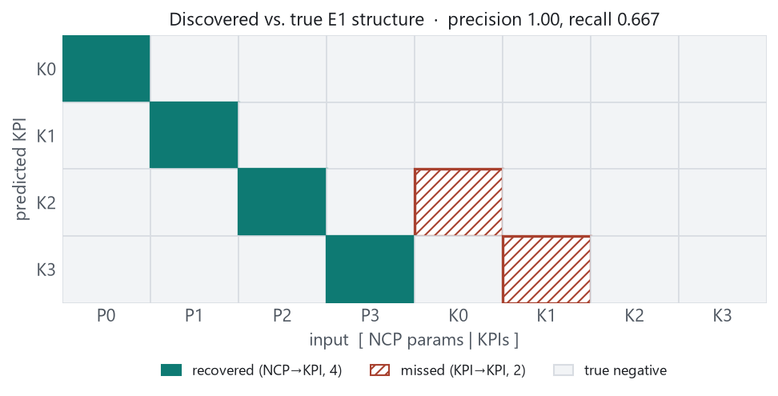
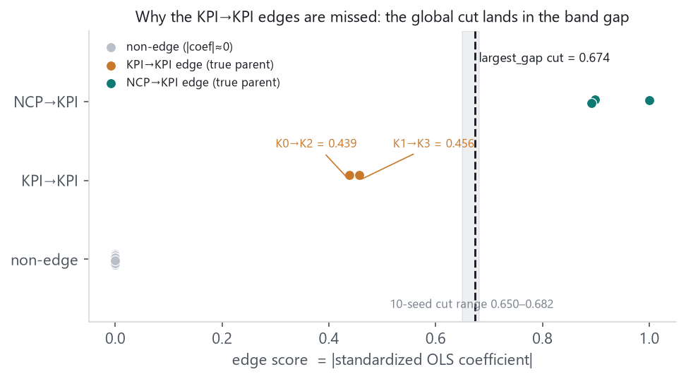
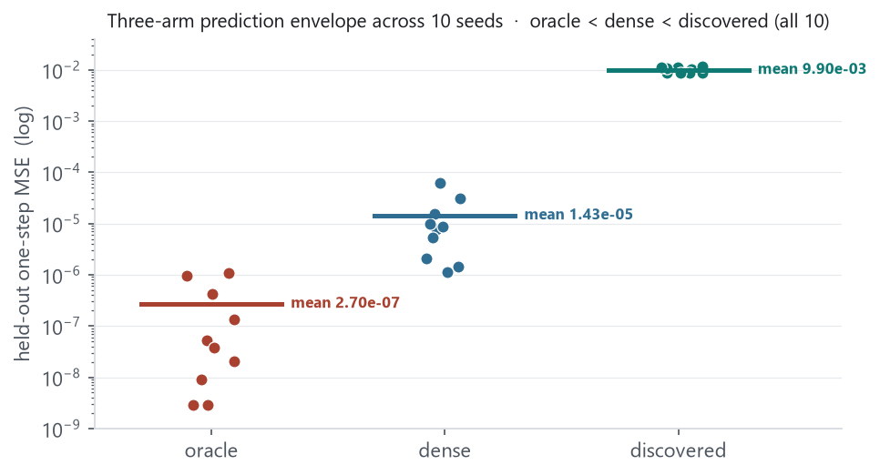
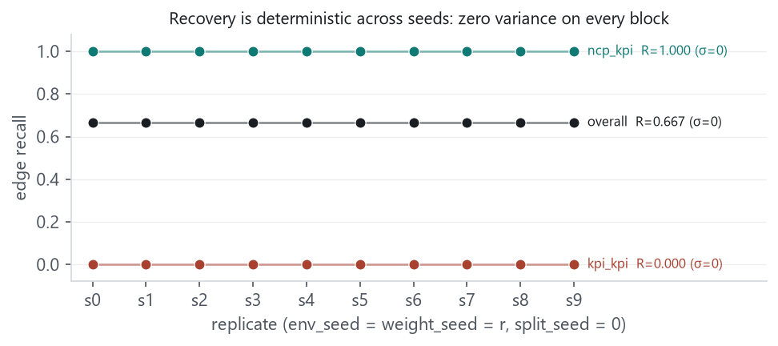

On the E1 one-step prediction pipeline we add a third, learned arm: a label-free discovery rule
(per-KPI OLS on standardized training features; edge score = |standardized
coefficient|; a single global largest_gap threshold with floor
10−3) whose protocol is frozen and committed before its
recovery number is read. On the frozen single-seed slice it recovers all four NCP→KPI edges
(precision 1.000) and misses both KPI→KPI edges (K0→K2, K1→K3), for overall
recall 0.667. The miss is a property of the global cut, not of
identifiability: the two KPI→KPI coefficients are nonzero and correctly signed
(0.439, 0.456) but fall in the gap below
the threshold (0.674), which lands between the KPI→KPI score band
(≈0.44) and the NCP→KPI band (≈0.9).
A 10-replicate envelope (env/weight seed = r, split seed
= 0) shows this pattern is exactly stable: standard deviation is
0 on all nine graph-recovery metrics, and every replicate’s cut falls in
the same band gap (range 0.650–0.682). In prediction, the three arms
order oracle < dense
< discovered by held-out MSE in all ten replicates (means
2.7×10−7,
1.4×10−5,
9.9×10−3): the discovered arm pays four orders of
magnitude for the two missing KPI→KPI parents its K2/K3 heads cannot see. This does not clear the
E1 recovery gate, which requires the two KPI→KPI edges; downstream E2–E5 decision results
therefore remain uninterpretable, as the locked contract states. The measurement runs on a
provenance/integrity-hardened pipeline (Section 6) and its digest is committed and byte-reproducible
from the runner.
The 2026-09-02 report established the apparatus — a persisted, hashed, leakage-controlled
generate→split→train→eval→verify pipeline — and used it to fix the
prediction zero point with a supplied graph: a masked-input oracle arm whose per-KPI heads see
only the true parents, and a dense arm of equal parameter count seeing all inputs. That report made no
discovery claim. This report closes that gap on the control environment: it replaces the supplied oracle
mask with a learned one, produced by a frozen label-free rule, and asks the one question the
control can answer in advance — whether a label-free method recovers the known E1 graph, and at
what prediction cost when it does not. It then measures the stability of that answer across ten seeds and
hardens the pipeline’s provenance guarantees against a review. No harder environment is introduced
and no legacy training path is touched.
Discovery consumes only the persisted training rows (the train_episodes from
split.json); it reads no test rows and imports no environment truth (an AST check enforces
the latter). For each KPI it standardizes the input features, fits ordinary least squares with an
intercept, and takes the edge score to be the absolute standardized coefficient. The included edges are
those whose score is at or above a single threshold chosen by largest_gap — the
largest gap in the sorted score distribution above a floor of 10−3.
The rule has no free parameter to tune after the fact: the floor and method are frozen constants, and the
protocol document is committed (e5312a6) and recorded as
protocol_commit inside every discovery.json the method writes, before any
recovery number is computed. A partial or null recovery is a valid outcome and is reported as produced.
The discovered mask becomes a third prediction arm on the same footing as the 2026-09-02 pair: the same per-KPI MLP architecture, the same training rows and identifiers, the same weight seed; only the fixed input mask differs. The three arms are matched by registered parameter count (644 each) and architecture — not by effective capacity (Section 7).
On the frozen single-seed slice the rule recovers exactly the four NCP→KPI edges and no false
positives, and misses both KPI→KPI edges (Fig 1, Table 1). The informative detail is
why the two edges are missed. The fitted coefficients on the true KPI→KPI parents are not
zero: K0→K2 = 0.439 and K1→K3 = 0.456, well
separated from the near-zero scores of the non-edges. But the score distribution is bimodal — a
KPI→KPI band near 0.44 and an NCP→KPI band near
0.9 — and the single global largest_gap cut falls in the gap
between them at 0.674 (Fig 2). The edges are therefore missed by the
global threshold, and were not shown to be interventionally or statistically unresolvable; their
signal is present in the coefficients. The natural non-retuning remedy is per-band or per-child
thresholding, which would be a new method under its own freeze, not a change to this one.


largest_gap cut (dashed, 0.674), which
separates them from the NCP→KPI band. The shaded strip is the range of
the cut across all ten seeds (0.650–0.682): it lands in the same band
gap every time.| block | precision | recall | F1 | tp | fp | fn | std (all) |
|---|---|---|---|---|---|---|---|
| overall | 1.000 | 0.667 | 0.800 | 4 | 0 | 2 | 0 |
| NCP→KPI | 1.000 | 1.000 | 1.000 | 4 | 0 | 0 | 0 |
| KPI→KPI | 0.000 | 0.000 | 0.000 | 0 | 0 | 2 | 0 |
Across ten replicates (dataset 48×16, warmup 2, noise 0; env_seed = weight_seed = r, split_seed = 0) the recovery pattern is not merely typical but exact: standard deviation is 0 on all nine graph metrics (Fig 4), and every replicate’s cut falls in the same band gap. The KPI→KPI recall floor is thus a deterministic property of this frozen control, not a seed artifact.
In prediction, the structural difference between arms is now visible at the scale of the data, unlike the supplied oracle–dense contrast of the prior report. The three arms order oracle < dense < discovered by held-out MSE in all ten replicates (Fig 3, Table 2). The discovered arm’s error is four orders of magnitude above the oracle’s: its K2 and K3 heads are masked away from K0 and K1, so they cannot represent K2 = a2·P2 + b2·K0 or K3 = a3·P3 + b3·K1 at all, and the missing-parent bias dominates the held-out error. The paired differences are reported as effect envelopes with a deterministic bootstrap interval; no hypothesis-significance claim is made from ten seeds.


| arm / pair | mean | min | max | bootstrap 95% CI |
|---|---|---|---|---|
| oracle MSE | 2.70e−07 | 2.82e−09 | 1.08e−06 | — |
| dense MSE | 1.43e−05 | 1.11e−06 | 6.14e−05 | — |
| discovered MSE | 9.90e−03 | 8.58e−03 | 1.16e−02 | — |
| discovered − oracle | 9.90e−03 | 8.58e−03 | 1.16e−02 | [9.18e−03, 1.06e−02] |
| dense − oracle | 1.40e−05 | 9.79e−07 | 6.14e−05 | [4.93e−06, 2.65e−05] |
| dense − discovered | −9.89e−03 | −1.16e−02 | −8.56e−03 | [−1.06e−02, −9.17e−03] |
The pipeline and sweep runner were hardened after an adversarial code review; every fix is a guard or a
re-derivation and none changed a computed value (the single-seed slice reproduces bit-for-bit, and the
archived discovery.json still loads). The review was itself two-round: each unit’s
first pass was reviewed, real defects were verified against the code before routing a second pass, and
two of those second-round defects were substantive rather than cosmetic. The closed items:
load_dataset now re-derives and binds
scm_hash, checks the stored scm_identity blob against the config-induced SCM,
and binds warmup to the rows via the recorded time coordinate
(each episode’s times must be the contiguous block warmup..warmup+steps−1).
load_discovery enforces the frozen constants (protocol_commit, method, floor),
the exact relation score = |coefficient|, and a re-derivation of the
threshold from largest_gap.paired_regret now rejects a planner action
outside the oracle’s action grid, while leaving regret unclamped (non-negativity remains a
property to verify, not to enforce).discovery.json/recovery.json.The integration baseline on the merged tree is ruff 0, ty 0, pytest green (1 xfailed).
Two statements in the prior report are narrowed here, on the same evidence:
Neither correction changes a number in either report; both make the framing match what the artifacts support.
largest_gap control. The KPI→KPI floor is a property of this method
on this environment and does not generalise to E2–E5 or to other discovery rules.CDL/MLPInference models used elsewhere.The learned E1 slice is now green as apparatus but red as a gate: it recovers the intervention-reachable NCP→KPI skeleton exactly and stably, and leaves a deterministic KPI→KPI floor whose cause is localised to the global threshold. The next step on the discovery axis is a method that resolves the two bands — per-band or per-child thresholding — introduced under its own freeze and measured with this same envelope, so that clearing (or not clearing) the E1 recovery gate is itself a preregistered result. Only once the gate is green does the locked contract permit interpreting the E2–E5 decision layer; that work, and the episodic rollout it depends on, remain deferred.
cdd_oran/e1slice/
(discovery.py, model.py, evaluate.py, aggregate.py);
sweep scripts/e1_slice_sweep.py; frozen protocol + result
docs/benchmark/E1_DISCOVERY_PROTOCOL.md, E1_DISCOVERY_RESULT.md,
plan003_frozen_artifacts/; committed envelope digest
docs/benchmark/plan004_envelope_digest/ (summary.json,
run_provenance.json, replicates.jsonl). Figures generated by the co-located
make_figs.py from the committed digest and archived discovery.e5312a6 (protocol) then implemented; envelope runner
cd3b0f4; review remediation merged into feat/v2 at 5152c6d
(units A 80ccab5, C 30f81d8, B 5152c6d); digest committed
786891c. No trained E2–E5 experiment; no legacy-path change.